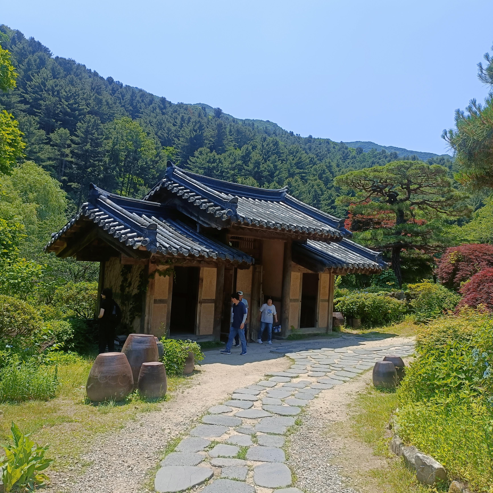
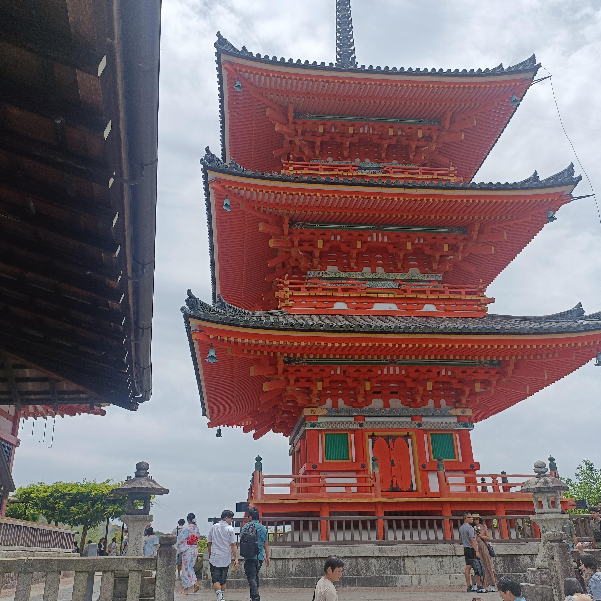
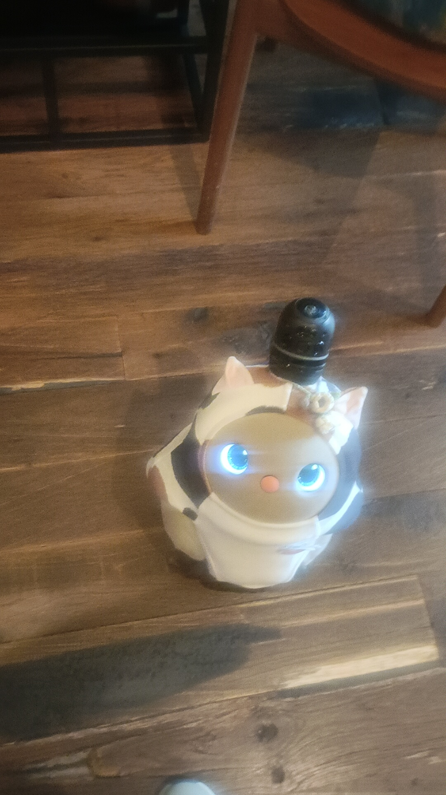

About Me
Hi, I'm Nelson Duarte, a BSc Computing student at Bath Spa University.
Alongside my studies, I work as a Quality Technician. I have over 10 years of experience in quality inspection, electronics manufacturing and problem-solving.
I decided to study Computing because I wanted a new challenge, to improve my knowledge and open doors to better career opportunities. I'm currently learning Python, C++, JavaScript, web development and databases.
Balancing work, university and personal life isn't always easy, but I'm determined to keep learning and improving.
Outside work and university, I enjoy going to the gym, travelling and exploring different cultures. My recent trip to South Korea and Japan was an unforgettable experience.
I created this website to share my learning journey, projects and progress as I work towards a career in technology.
My journey into Computing is driven by my desire to learn new skills, explore new opportunities and build a better future.
My Computing Journey
Studying Computing has introduced me to programming, web development, databases and software engineering.
I am learning how to create websites, write code and understand how computer systems work.
My goal is to combine my professional experience with my growing computing skills and build a successful career in technology.
My South Korea and Japan Experience
In June 2026, I had an amazing opportunity to visit South Korea and Japan through an international programme supported by my university. It was an unforgettable experience that allowed me to discover new cultures, meet different people and see how technology plays a part in everyday life.
South Korea
My journey began in South Korea, where I explored Seoul and experienced its modern lifestyle, culture and technology. It was fascinating to see how tradition and innovation come together in such a vibrant city.
Japan
I continued my journey to Japan, visiting Osaka, Kyoto and Tokyo. From traditional temples to modern cities and bullet trains, every place offered something different.
What I Took Away
This journey gave me more than just memories. It helped me become more confident, independent and open-minded. It also inspired me to continue learning and exploring opportunities beyond the classroom.
Travelling to South Korea and Japan helped me develop my confidence, independence and understanding of different cultures.
My Computing Skills & Development
HTML5 & CSS3
Learning to build and style responsive websites.
JavaScript
Developing interactive websites.
Python & C++
Developing programming and problem-solving skills.
SQL & Databases
Learning database design and management.
React
Learning to build web applications.
UX/UI Design
Exploring interface design using Figma.
Visual Studio Code
Using VS Code to write and organise code.
Software Engineering
Learning software requirements and system design.
Adaptability & Problem-Solving
Applying skills developed through professional experience and study.
My South Korea & Japan Experience

Traditional Korean Architecture
This beautiful traditional building is surrounded by mountains and nature. I really liked the peaceful atmosphere and how the building blends into its surroundings.

Japanese Temple - Kyoto
This photograph shows a beautiful Japanese pagoda with its striking red architecture. Visiting places like this helped me appreciate Japan's history, culture and traditions.

A Little Robot Friend
During my travels, I came across this adorable robot-like character with glowing blue eyes. Its unusual design caught my attention and reminded me of my interest in technology.
My journey to South Korea and Japan was an unforgettable experience. I had the chance to explore different cultures, visit beautiful places and discover how tradition and modern technology come together. Every place I visited gave me something new to learn and memories to treasure.
South Korea
My journey began in Seoul, South Korea, where I experienced the busy streets, modern buildings and unique culture. One of my favourite things was seeing the contrast between traditional Korean architecture and the modern city. It was an amazing opportunity to explore a country I had never visited before.
Japan
From South Korea, I continued my journey to Japan, visiting Osaka, Kyoto and Tokyo. I enjoyed exploring traditional temples, experiencing Japanese culture and seeing the famous bullet trains. I was particularly interested in how Japan combines its rich history with modern technology and innovation.
What I Learned
This journey taught me much more than I expected. It helped me become more confident, independent and open-minded. I also realised how much there is to discover beyond the classroom. As a Computing student, seeing different cultures and approaches to technology has motivated me to keep learning, improving my skills and exploring new opportunities for the future.